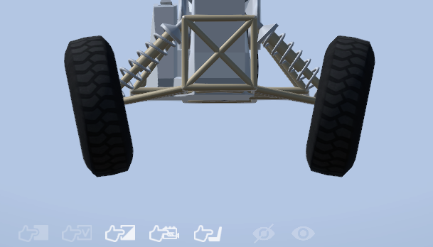
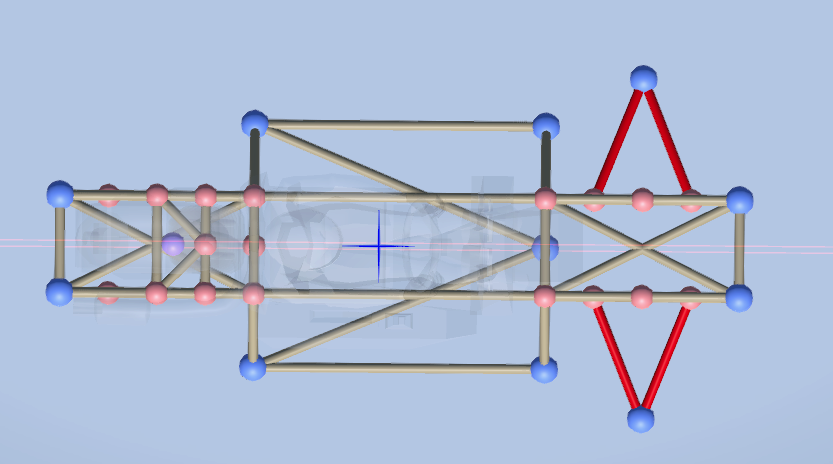
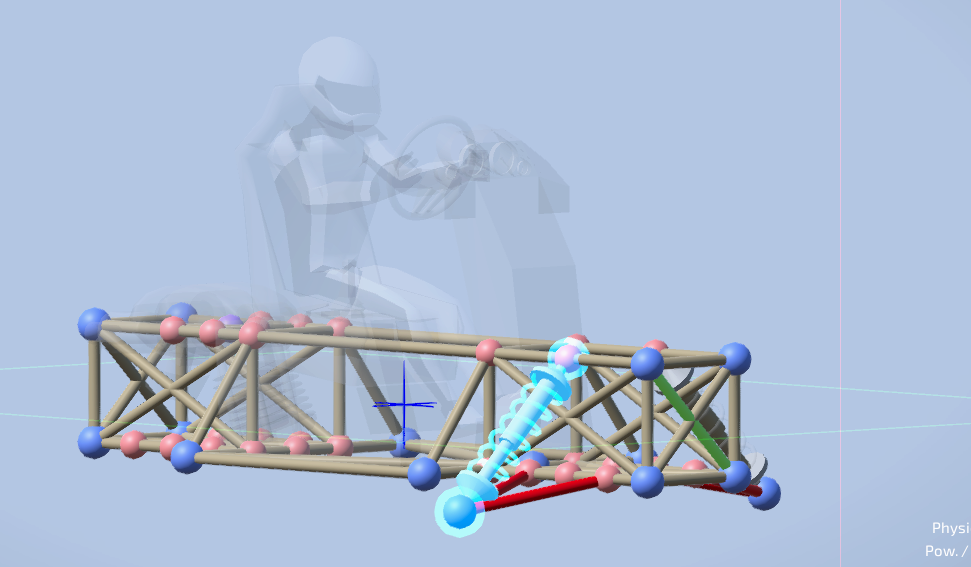
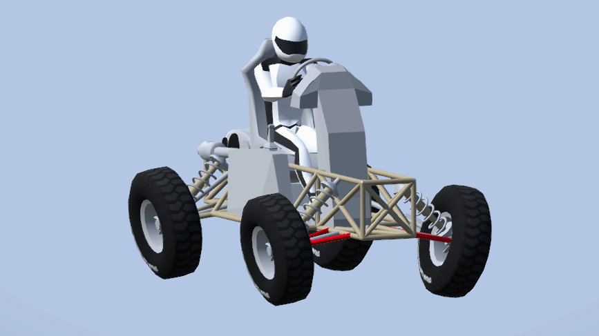
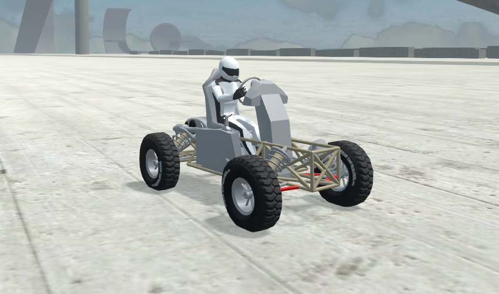

The single brace is the easiest suspension to make. It works great but has one major flaw and that only the edge of your wheel will touch the ground. This is bad due to limited grip resulting in poor handling. Below is an example of what I mean. I will not be going over steering in this tutorial but steering is also posted in the tutorials section. Below is an example of the tire contact.

Start off with a top down view of your frame and draw a triangle, below is an example highlighted in red.

Next, draw a spring from the top bar of your frame to the point of your triangle. This is the spring that will hold your car up. You may have to adjust hardness or length depending on how heavy your car is or how you want it to handle. The spring placement is shown below.

To finish your suspension add your wheels, steering and thread your transmission through. There is no harm in just messing with your suspension to see how it handles. This is a crude example of complete suspension, this car lacks steering.

Here you can see the suspension in action. The car handles well and the tires are deflated enough that it still has decent grip. You can clearly see it holding the car up and the suspension is working.
